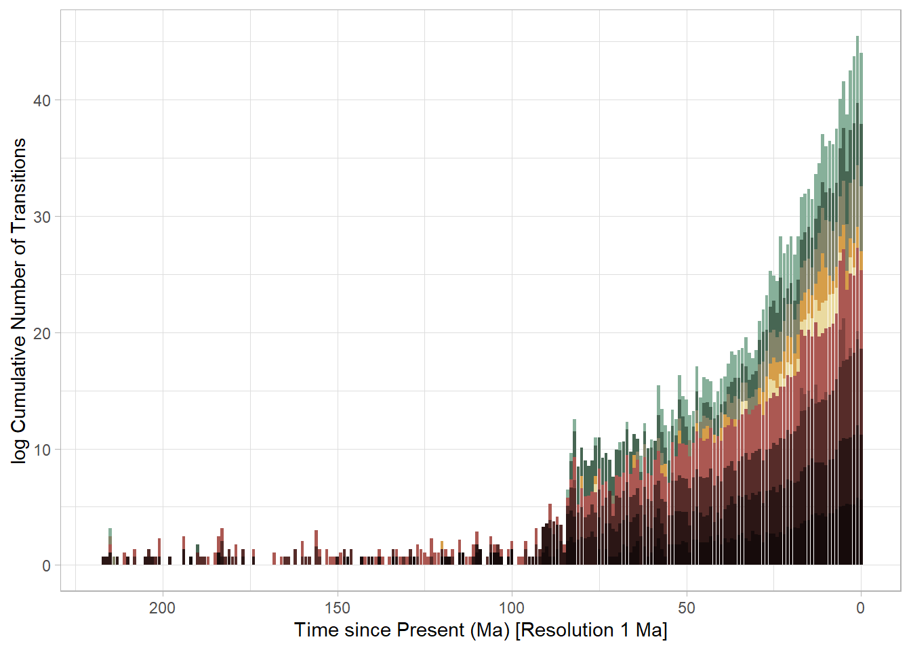

rm(list=ls())
gc() used (Mb) gc trigger (Mb) max used (Mb)
Ncells 562877 30.1 1286092 68.7 644254 34.5
Vcells 1007273 7.7 8388608 64.0 1635163 12.5rm(list=ls())
gc() used (Mb) gc trigger (Mb) max used (Mb)
Ncells 562877 30.1 1286092 68.7 644254 34.5
Vcells 1007273 7.7 8388608 64.0 1635163 12.5## 1.] Compute MCC tree from 1000 trees
p.mammals.1000trees <- "input/Mammals/Raw/mammal_1000.nex" # 1000 trees from posterior distribution of mammal phylogeny
tree_mammals <- read.nexus(p.mammals.1000trees) # Raw Data
MCC_mammals <- mcc(tree_mammals, tree = TRUE, part = NULL, rooted = TRUE) # Data Processing
# saveRDS(MCC_mammals, paste0(out.path, "RDS/MCC_mammals.rds"))
# write.tree(MCC_mammals, paste(p.mammals.MCC)) # Procesed Data (MCC tree)
rm(tree_mammals) # remove raw data
## 2.] Create Model dataframe with species and traits
p.mammals.traits <- "input/Mammals/Raw/Trait_data.csv" # all traits for all mammals
mammal_traitData <- read.csv(p.mammals.traits, sep=",")
##make dataframe with species, mass trait
mammal_traitData2 <- mammal_traitData[,c(1,6,12,20)]
mammal_subset_df <- mammal_traitData2[mammal_traitData2[, 2] == 1, ]
# Initialize a new column filled with zeros
mammal_subset_df$non_herb_small <- 0
mammal_subset_df$non_herb_large <- 0
mammal_subset_df$herb_small <- 0
mammal_subset_df$herb_large <- 0
mammal_subset_df$Trait_Herbivory <- "NA"
mammal_subset_df$non_herb_small[mammal_subset_df$Mass.g <= 10000 & mammal_subset_df$Diet.Plant <= 95] <- 1
mammal_subset_df$non_herb_large[mammal_subset_df$Mass.g >= 10000 & mammal_subset_df$Diet.Plant <= 95] <- 1
mammal_subset_df$herb_small[mammal_subset_df$Mass.g <= 10000 & mammal_subset_df$Diet.Plant >= 95] <- 1
mammal_subset_df$herb_large[mammal_subset_df$Mass.g >= 10000 & mammal_subset_df$Diet.Plant >= 95] <- 1
mammal_subset_df$Trait_Herbivory[mammal_subset_df$Mass.g <= 10000 & mammal_subset_df$Diet.Plant <= 95] <- "non_herb_small"
mammal_subset_df$Trait_Herbivory[mammal_subset_df$Mass.g >= 10000 & mammal_subset_df$Diet.Plant <= 95] <- "non_herb_large"
mammal_subset_df$Trait_Herbivory[mammal_subset_df$Mass.g <= 10000 & mammal_subset_df$Diet.Plant >= 95] <- "herb_small"
mammal_subset_df$Trait_Herbivory[mammal_subset_df$Mass.g >= 10000 & mammal_subset_df$Diet.Plant >= 95] <- "herb_large"
mammal_traitData3 <- mammal_subset_df[,c(1,9)]
mammal_traitData3$Trait_Herbivory <- as.factor(mammal_traitData3$Trait_Herbivory)
str(mammal_traitData3)
# write.csv(mammal_traitData, file = paste(p.mammals.traits.short), row.names = FALSE)
rm(mammal_subset_df, mammal_traitData,mammal_traitData2)
mammal_traitData <- mammal_traitData3
rm(mammal_traitData3)
## 3.] Data & Tree Matching
# Exclude those taxa from the phylogeny and the trait dataset
mammal_intersectTaxa <- intersect(mammal_traitData$Binomial.1.2, MCC_mammals$tip.label)
# Drop species from the trait data
mammal_traitDataSubset <- subset(mammal_traitData, Binomial.1.2 %in% mammal_intersectTaxa)
mammal_traitDataSubset2 <- data.frame(row.names = mammal_traitDataSubset$Binomial.1.2,
Trait_Herbivory = mammal_traitDataSubset$Trait_Herbivory)
# write.csv(mammal_traitDataSubset2, paste(p.mammals.traits.MCC))
# Drop tips from the tree
mammal_PhyloSubset <- drop.tip(MCC_mammals,
tip = MCC_mammals$tip.label[!MCC_mammals$tip.label %in% mammal_intersectTaxa])
# write.tree(mammal_PhyloSubset, paste(p.mammals.MCC_drop))
rm(mammal_traitDataSubset, mammal_intersectTaxa)
# Insepct Trait in extant species
table(mammal_traitDataSubset2)
# Select Mass trait (and make a vector from it)
Mass <- mammal_traitDataSubset2$Trait_Herbivory
names(Mass) <- row.names(mammal_traitDataSubset2)
# Convert to a factor
Mass <- as.factor(Mass)
table(Mass)
# Reorder data if needed (assuming ReorderData and tree2 are defined)
Mass <- ReorderData(mammal_PhyloSubset, Mass, taxa.names="names")
# ordered trait vector for models (not dataframe)
str(Mass) # make sure it's a factor
# saveRDS(Mass, "input/Mammals/Processed/Mass.rds")# Mk models ============================
# estimate the rates of transitioning between ancestral states given a hypothesis
# (either equal rates(ER), or different rates(ARD))
tree <- ladderize(readRDS("../../input/Mammals/Processed/Mammals_MCC_drop.rds"))
trait <- readRDS("../../input/Mammals/Processed/Mammals_traits_drop.rds")
# computing time = 2.297s
system.time(
equal <- fitDiscrete(tree, trait, model = "ER"), gcFirst = T
)
# computing time = 8.726s
system.time(
ard <- fitDiscrete(tree, trait, model = "ARD")
)
# computing time = 8.726s
system.time(
sym <- fitDiscrete(tree, trait, model = "SYM")
)
# Calculate AIC weights
aic.discrete <- setNames(c(equal$opt$aic, ard$opt$aic, sym$opt$aic), c("equal", "different", "symmetric"))
weights <- aicw(aic.discrete)
weights # ARD model performs better for megaherbivore/other
mammals_tree <- tree
mammals_trait <- trait
rm(trait, tree, equal, ard, aic.discrete, weights)trait <- mammals_trait
trait <- as.factor(mammals_trait$Trait_Herbivory)
names(trait) <- rownames(mammals_trait)
tree <- ladderize(mammals_tree)
# For 100 simulation (nsim=100) --> computing time = 147.31s
system.time(
mtrees <- make.simmap(tree, trait, model = "ARD", nsim = 100)
)
# saveRDS(mtrees, "output/RDS/Mammals_4traits_simmap_100.rds")
# mammals_simmap <- readRDS("../../output/RDS/Mammals_4traits_simmap_100.rds")
# 2.4s
system.time(
pd_mtrees <- describe.simmap(mtrees, plot = FALSE)
)
pd_mtrees
mammals_simmap_100 <- mtrees
# saveRDS(mammals_simmap_100, paste0(out.path,"RDS/" ,"Mammals_4traits_simmap_100.rds"))
# saveRDS(pd_mtrees, paste0(out.path,"RDS/" ,"pd_mtrees_mammals_4traits.rds"))rm(list=ls())
library(dplyr)
library(rstatix)
library(phytools)
library(ape)
library(geiger)
library(ggplot2)
library(prettyGraphs)#### Data =====================================================================
# changes_table_Mammals <- read.csv("~/GitHub/Evo-Legumes-Herbivory/LegumesArmature/output/CSV/4traits_Mammals_changes_table_wo_edgelengths.csv")
changes_table_Mammals <- read.csv("~/GitHub/Evo-Legumes-Herbivory/LegumesArmature/output/CSV/4traits_Mammals_changes_table_w_edgelengths.csv")
mtrees_M <- readRDS("~/GitHub/Evo-Legumes-Herbivory/LegumesArmature/output/RDS/Mammals_4traits_simmap_100.rds")
pd_mammals <- readRDS("../output/RDS/pd_mtrees_mammals_4traits.rds")ageM <- max(nodeHeights(mtrees_M[[1]])) # root age: 217.84 Ma years old
changes_table_Mammals <- changes_table_Mammals %>%
mutate(time_new = ageM - time) %>% # Time before present [Ma]
mutate(time_new = round(time_new,5)) %>%
select(-time)
changes_table_Mammals %>%
group_by(N_sim, transition) %>%
summarise(N = n(), avg_time = mean(time_new))`summarise()` has grouped output by 'N_sim'. You can override using the
`.groups` argument.# A tibble: 962 × 4
# Groups: N_sim [100]
N_sim transition N avg_time
<int> <chr> <int> <dbl>
1 1 herb_large->herb_small 19 10.9
2 1 herb_large->non_herb_large 4 54.4
3 1 herb_small->herb_large 29 16.9
4 1 herb_small->non_herb_large 2 11.1
5 1 herb_small->non_herb_small 93 11.1
6 1 non_herb_large->herb_large 16 21.7
7 1 non_herb_large->herb_small 2 11.4
8 1 non_herb_large->non_herb_small 51 13.1
9 1 non_herb_small->herb_small 120 12.8
10 1 non_herb_small->non_herb_large 29 11.9
# ℹ 952 more rowschanges_table_Mammals %>%
group_by(transition, trans_no) %>%
summarise(avg_time=mean(time_new))`summarise()` has grouped output by 'transition'. You can override using the
`.groups` argument.# A tibble: 460 × 3
# Groups: transition [10]
transition trans_no avg_time
<chr> <int> <dbl>
1 herb_large->herb_small 1 61.3
2 herb_large->herb_small 2 32.4
3 herb_large->herb_small 3 20.6
4 herb_large->herb_small 4 15.3
5 herb_large->herb_small 5 11.8
6 herb_large->herb_small 6 8.98
7 herb_large->herb_small 7 7.46
8 herb_large->herb_small 8 5.64
9 herb_large->herb_small 9 4.43
10 herb_large->herb_small 10 3.30
# ℹ 450 more rowsmean_plotdf <- changes_table_Mammals %>%
group_by(transition, trans_no) %>%
summarise(N=n(), avg_time = mean(time_new)) `summarise()` has grouped output by 'transition'. You can override using the
`.groups` argument.mean_plotdf$transition <- as.factor(mean_plotdf$transition)
# --------------------------------------- #
plot_df <- changes_table_Mammals %>%
mutate(time_rounded = round(time_new, 0)) %>%
group_by(transition, time_rounded) %>% summarise(N = n()) %>%
distinct() `summarise()` has grouped output by 'transition'. You can override using the
`.groups` argument.plot_df# A tibble: 1,077 × 3
# Groups: transition [10]
transition time_rounded N
<chr> <dbl> <int>
1 herb_large->herb_small 0 276
2 herb_large->herb_small 1 200
3 herb_large->herb_small 2 241
4 herb_large->herb_small 3 120
5 herb_large->herb_small 4 56
6 herb_large->herb_small 5 43
7 herb_large->herb_small 6 30
8 herb_large->herb_small 7 47
9 herb_large->herb_small 8 78
10 herb_large->herb_small 9 106
# ℹ 1,067 more rows# Reorder factors :
## 1. [3],[6] transitions from other (herb small, non-herb large) to megaherb => dark green colours
## 2. [1], [2] transitions from megaherb to other (herb small, non-herb large) => army green-deep orange
## 3. [4], [5] transition from herb small to other (non-herb large, non-herb small) => yellow-brown
## 4. [7], [9] transition from other (non herb large, non herb small) to herb small => brownish
## 5. [8], [10] transitions between small and large non herbivores => darkbrown-black
x <- unique(plot_df$transition)
plot_df$transition <- factor(plot_df$transition, levels =c(x[3], x[6], x[1], x[2], x[4], x[5], x[7], x[9], x[8], x[10]))
Levels_ordered <- levels(plot_df$transition)# this is for plotting trait states
cols1<-setNames(c("#476653", "#eadaa0", "#562c29", "#ab5852", "darkgrey"),c("herb_large", "herb_small", "non_herb_large", "non_herb_small", "total"))
# This is for coloring the phylogeny
cols<-setNames(c("#476653", "#eadaa0", "#562c29", "#ab5852"),c("herb_large", "herb_small", "non_herb_large", "non_herb_small"))
# This is for transition rates in all directions
myColours <- c("#87b09a","#476653", # from other (herb small, non-herb large) to megaherb
"#838469","#d69e49", # from megaherb to other (herb small, non-herb large)
"#eadaa0","#ab5852", # from herb small to other (non-herb large, non-herb small)
"#81423e","#562c29", # from other (non herb large, non herb small) to herb small
"#2b1615","#160b0b") # between small and large non herbivores
## This one is used in the script:
traits4_10cols <- myColours
# add transparency
myColoursAlpha <- prettyGraphs::add.alpha(myColours, alpha=0.2)
# Colors with transparency:
my_cols <- setNames(myColoursAlpha, c(levels(plot_df$transition))) #
# Colors without transparency:
my_cols2 <- setNames(myColours,c(levels(plot_df$transition)))
# Without transparency for Mean transitions
mean_cols <- setNames(my_cols2, c(levels(mean_plotdf$transition)))par(bg="white",
fg="black",
col.lab="blue",
col.axis="white",
xpd=TRUE);
plotSimmap(mtrees_M[[1]],cols,fsize=0.2,ftype="i",outline=TRUE,
lwd=1.5,ylim=c(0,Ntip(mtrees_M[[1]])),
mar=c(10,0.1,1.1,6))
geo.legend(alpha = 0.2, cex = 1.2)#### Simmap Summary
print(mtrees_M[[1]]$Q) herb_large herb_small non_herb_large non_herb_small
herb_large -0.006590044 0.0054001384 0.001189905 0.00000000
herb_small 0.003723303 -0.0168445290 0.000252304 0.01286892
non_herb_large 0.009286257 0.0006733651 -0.038546297 0.02858668
non_herb_small 0.000000000 0.0086403166 0.002076368 -0.01071668print(pd_mammals)100 trees with a mapped discrete character with states:
herb_large, herb_small, non_herb_large, non_herb_small
trees have 361.83 changes between states on average
changes are of the following types:
herb_large,herb_small herb_large,non_herb_large herb_large,non_herb_small
x->y 16.88 3.65 0
herb_small,herb_large herb_small,non_herb_large herb_small,non_herb_small
x->y 27.18 1.52 95.93
non_herb_large,herb_large non_herb_large,herb_small
x->y 16.6 1.11
non_herb_large,non_herb_small non_herb_small,herb_large
x->y 50.47 0
non_herb_small,herb_small non_herb_small,non_herb_large
x->y 119.39 29.1
mean total time spent in each state is:
herb_large herb_small non_herb_large non_herb_small total
raw 3148.9368083 7333.3854334 1.757721e+03 1.398741e+04 26227.46
prop 0.1200626 0.2796072 6.701836e-02 5.333119e-01 1.00Table 1: Transition Matrix (Q-Matrix) used to estimate transitions between trait states (table created manually from code chunk output above)
| herb large | herb small | non-herb large | non-herb small | |
|---|---|---|---|---|
| herb large | – | ` 0.0054 ``` | ` 0.0012 ``` | ` 0.0000 ``` |
| herb small | ` 0.0037 ``` | – | ` 0.0003 ``` | ` 0.0129 ``` |
| non-herb large | ` 0.0093 ``` | ` 0.0007 ``` | – | ` 0.0286 ``` |
| non-herb small | ` 0.0000 ``` | ` 0.0086 ``` | ` 0.0021 ``` | – |
ggplot()+
geom_line(aes(x = time_rounded, y = N, col = transition),
data = plot_df, lwd=1.5)+
facet_wrap(transition~., nrow= 10)+
scale_color_manual(values=my_cols2,
aesthetics = c("colour"))+
#theme_light()+
theme(legend.position="none")+
scale_x_reverse()+
ylab("Cumulative Number of Transitions") +
xlab("Time since Present (Ma) [Resolution 1 Ma]") +
theme_light()ggplot()+
geom_point(aes(x = time_rounded, y = N, fill = transition), shape = 23,
data = plot_df)+
facet_wrap(transition~., nrow= 10)+
scale_color_manual(values=my_cols2,
aesthetics = c("colour"))+
#theme_light()+
theme(legend.position="none")+
scale_x_reverse()+
ylab("Cumulative Number of Transitions") +
xlab("Time since Present (Ma) [Resolution 1 Ma]") +
theme_light()#### Cut to last 45 MA
ggplot()+
geom_line(aes(x = time_rounded, y = N, col = transition),
data = plot_df, lwd=1.5)+
facet_wrap(transition~., nrow= 10)+
scale_color_manual(values=my_cols2,
aesthetics = c("colour"))+
#theme_light()+
theme(legend.position="none")+
ylab("Cumulative Number of Transitions") +
xlab("Time since Present (Ma) [Resolution 1 Ma]") +
theme_light()+
xlim(45, 0)Warning: Removed 664 rows containing missing values (`geom_line()`).ggplot()+
geom_point(aes(x = time_rounded, y = N, fill = transition), shape = 23,
data = plot_df)+
facet_wrap(transition~., nrow= 10)+
scale_color_manual(values=my_cols2,
aesthetics = c("colour"))+
#theme_light()+
theme(legend.position="none")+
ylab("Cumulative Number of Transitions") +
xlab("Time since Present (Ma) [Resolution 1 Ma]") +
theme_light()+
xlim(45, 0)Warning: Removed 664 rows containing missing values (`geom_point()`).range(plot_df$N)[1] 1 1661ggplot()+
geom_line(aes(x = time_rounded, y = log(N), col = transition),
data = plot_df, lwd=1.5)+
facet_wrap(transition~., nrow= 10)+
scale_color_manual(values=my_cols2,
aesthetics = c("colour"))+
#theme_light()+
theme(legend.position="none")+
scale_x_reverse()+
ylab("log Cumulative Number of Transitions") +
xlab("Time since Present (Ma) [Resolution 1 Ma]") +
theme_light()ggplot()+
geom_point(aes(x = time_rounded, y = log(N), fill = transition), shape = 23,
data = plot_df)+
facet_wrap(transition~., nrow= 10)+
scale_color_manual(values=my_cols2,
aesthetics = c("colour"))+
#theme_light()+
theme(legend.position="none")+
scale_x_reverse()+
ylab("log Cumulative Number of Transitions") +
xlab("Time since Present (Ma) [Resolution 1 Ma]") +
theme_light()#### Cut to last 45 MA
ggplot()+
geom_line(aes(x = time_rounded, y = log(N), col = transition),
data = plot_df, lwd=1.5)+
facet_wrap(transition~., nrow= 10)+
scale_color_manual(values=my_cols2,
aesthetics = c("colour"))+
#theme_light()+
theme(legend.position="none")+
ylab("log Cumulative Number of Transitions") +
xlab("Time since Present (Ma) [Resolution 1 Ma]") +
theme_light()+
xlim(45, 0)Warning: Removed 664 rows containing missing values (`geom_line()`).ggplot()+
geom_point(aes(x = time_rounded, y = log(N), fill = transition), shape = 23,
data = plot_df)+
facet_wrap(transition~., nrow= 10)+
scale_color_manual(values=my_cols2,
aesthetics = c("colour"))+
#theme_light()+
theme(legend.position="none")+
ylab("log Cumulative Number of Transitions") +
xlab("Time since Present (Ma) [Resolution 1 Ma]") +
theme_light()+
xlim(45, 0)Warning: Removed 664 rows containing missing values (`geom_point()`).ggplot()+
geom_col(aes(x = time_rounded, y = N, fill = transition),
data = plot_df)+
# geom_line(aes(x = time_rounded, y = N, fill = transition, col = transition),
# data = plot_df)+
#facet_wrap(transition~., nrow= 10)+
scale_color_manual(values=my_cols2,
aesthetics = c("fill"))+
theme_light()+
theme(legend.position="none")+
scale_x_reverse()+
ylab("Cumulative Number of Transitions") +
xlab("Time since Present (Ma) [Resolution 1 Ma]") Fig1a_M <- ggplot()+
geom_col(aes(x = time_rounded, y = N), fill = myColoursAlpha[10], col = myColoursAlpha[10],
data = plot_df %>% filter(transition == Levels_ordered[10]))+
geom_col(aes(x = time_rounded, y = N), fill = myColoursAlpha[9], col = myColoursAlpha[9],
data = plot_df %>% filter(transition == Levels_ordered[9]))+
geom_col(aes(x = time_rounded, y = N), fill = myColoursAlpha[8], col = myColoursAlpha[8],
data = plot_df %>% filter(transition == Levels_ordered[8]))+
geom_col(aes(x = time_rounded, y = N), fill = myColoursAlpha[7], col = myColoursAlpha[7],
data = plot_df %>% filter(transition == Levels_ordered[7]))+
geom_col(aes(x = time_rounded, y = N), fill = myColoursAlpha[6], col = myColoursAlpha[7],
data = plot_df %>% filter(transition == Levels_ordered[6]))+
geom_col(aes(x = time_rounded, y = N), fill = myColoursAlpha[5], col = myColoursAlpha[5],
data = plot_df %>% filter(transition == Levels_ordered[5]))+
geom_col(aes(x = time_rounded, y = N), fill = myColoursAlpha[4], col = "white",
data = plot_df %>% filter(transition == Levels_ordered[4]))+
geom_col(aes(x = time_rounded, y = N), fill = myColoursAlpha[3], col = "white",
data = plot_df %>% filter(transition == Levels_ordered[3]))+
geom_col(aes(x = time_rounded, y = N), fill = myColoursAlpha[2], col = "black",
data = plot_df %>% filter(transition == Levels_ordered[2]))+
geom_col(aes(x = time_rounded, y = N), fill = myColoursAlpha[1], col = "black",
data = plot_df %>% filter(transition == Levels_ordered[1]))+
ylab("Cumulative Number of Transitions") +
xlab("Time since Present (Ma) [Resolution 1 Ma]") +
theme_classic()+
#scale_fill_manual(values = mean_cols)+
labs(title ="Number of transitions per 1 million years (Mammals)")+
scale_x_reverse()
Fig1a_Mggplot()+
geom_col(aes(x = time_rounded, y = log(N), fill = transition),
data = plot_df)+
# geom_line(aes(x = time_rounded, y = N, fill = transition, col = transition),
# data = plot_df)+
#facet_wrap(transition~., nrow= 10)+
scale_color_manual(values=my_cols2,
aesthetics = c("fill"))+
theme_light()+
theme(legend.position="none")+
scale_x_reverse()+
ylab("log Cumulative Number of Transitions") +
xlab("Time since Present (Ma) [Resolution 1 Ma]") 
Fig1a_M_log <- ggplot()+
geom_col(aes(x = time_rounded, y = log(N)), fill = myColoursAlpha[10], col = myColoursAlpha[10],
data = plot_df %>% filter(transition == Levels_ordered[10]))+
geom_col(aes(x = time_rounded, y = log(N)), fill = myColoursAlpha[9], col = myColoursAlpha[9],
data = plot_df %>% filter(transition == Levels_ordered[9]))+
geom_col(aes(x = time_rounded, y = log(N)), fill = myColoursAlpha[8], col = myColoursAlpha[8],
data = plot_df %>% filter(transition == Levels_ordered[8]))+
geom_col(aes(x = time_rounded, y = log(N)), fill = myColoursAlpha[7], col = myColoursAlpha[7],
data = plot_df %>% filter(transition == Levels_ordered[7]))+
geom_col(aes(x = time_rounded, y = log(N)), fill = myColoursAlpha[6], col = myColoursAlpha[7],
data = plot_df %>% filter(transition == Levels_ordered[6]))+
geom_col(aes(x = time_rounded, y = log(N)), fill = myColoursAlpha[5], col = myColoursAlpha[5],
data = plot_df %>% filter(transition == Levels_ordered[5]))+
geom_col(aes(x = time_rounded, y = log(N)), fill = myColoursAlpha[4], col = "white",
data = plot_df %>% filter(transition == Levels_ordered[4]))+
geom_col(aes(x = time_rounded, y = log(N)), fill = myColoursAlpha[3], col = "white",
data = plot_df %>% filter(transition == Levels_ordered[3]))+
geom_col(aes(x = time_rounded, y = log(N)), fill = myColoursAlpha[2], col = "black",
data = plot_df %>% filter(transition == Levels_ordered[2]))+
geom_col(aes(x = time_rounded, y = log(N)), fill = myColoursAlpha[1], col = "black",
data = plot_df %>% filter(transition == Levels_ordered[1]))+
ylab("log Cumulative Number of Transitions") +
xlab("Time since Present (Ma) [Resolution 1 Ma]") +
theme_classic()+
scale_fill_manual(values = mean_cols)+
labs(title ="Number of transitions per 1 million years (Mammals)")+
scale_x_reverse()## Mean cumulative rates (averaged across simulations)
plot_df <- changes_table_Mammals %>%
mutate(time_rounded = round(time_new, 0)) %>%
group_by(transition, N_sim, time_rounded) %>%
summarise(mean_N = mean(length(trans_no))) %>%
ungroup() %>%
group_by(transition, time_rounded) %>%
summarise(N = mean(mean_N))
Fig1b_M <- ggplot()+
geom_col(aes(x = time_rounded, y = N), fill = myColoursAlpha[10], col = myColoursAlpha[10],
data = plot_df %>% filter(transition == Levels_ordered[10]))+
geom_col(aes(x = time_rounded, y = N), fill = myColoursAlpha[9], col = myColoursAlpha[9],
data = plot_df %>% filter(transition == Levels_ordered[9]))+
geom_col(aes(x = time_rounded, y = N), fill = myColoursAlpha[8], col = myColoursAlpha[8],
data = plot_df %>% filter(transition == Levels_ordered[8]))+
geom_col(aes(x = time_rounded, y = N), fill = myColoursAlpha[7], col = myColoursAlpha[7],
data = plot_df %>% filter(transition == Levels_ordered[7]))+
geom_col(aes(x = time_rounded, y = N), fill = myColoursAlpha[6], col = myColoursAlpha[7],
data = plot_df %>% filter(transition == Levels_ordered[6]))+
geom_col(aes(x = time_rounded, y = N), fill = myColoursAlpha[5], col = myColoursAlpha[5],
data = plot_df %>% filter(transition == Levels_ordered[5]))+
geom_col(aes(x = time_rounded, y = N), fill = myColoursAlpha[4], col = "white",
data = plot_df %>% filter(transition == Levels_ordered[4]))+
geom_col(aes(x = time_rounded, y = N), fill = myColoursAlpha[3], col = "white",
data = plot_df %>% filter(transition == Levels_ordered[3]))+
geom_col(aes(x = time_rounded, y = N), fill = myColoursAlpha[2], col = "black",
data = plot_df %>% filter(transition == Levels_ordered[2]))+
geom_col(aes(x = time_rounded, y = N), fill = myColoursAlpha[1], col = "black",
data = plot_df %>% filter(transition == Levels_ordered[1]))+
ylab("Mean Cumulative Number of Transitions") +
xlab("Time since Present (Ma) [Resolution 1 Ma]") + xlim(45, 0) +
theme_classic()+
scale_fill_manual(values = mean_cols)+
labs(title ="Mean Number of transitions per 1 million years (Mammals)")
gridExtra::grid.arrange(Fig1a_M, Fig1b_M, nrow = 2)## Together ====================== ###
### Export via Pane -> Export -> as PDF -> Cairo device -> width 6 x height 3.5: Name : Mammals_CumTrans_Bar.pdf
ggplot()+
geom_col(aes(x = time_rounded, y = N), fill = myColoursAlpha[10], col = myColoursAlpha[10],
data = plot_df %>% filter(transition == Levels_ordered[10]))+
geom_col(aes(x = time_rounded, y = N), fill = myColoursAlpha[9], col = myColoursAlpha[9],
data = plot_df %>% filter(transition == Levels_ordered[9]))+
geom_col(aes(x = time_rounded, y = N), fill = myColoursAlpha[8], col = myColoursAlpha[8],
data = plot_df %>% filter(transition == Levels_ordered[8]))+
geom_col(aes(x = time_rounded, y = N), fill = myColoursAlpha[7], col = myColoursAlpha[7],
data = plot_df %>% filter(transition == Levels_ordered[7]))+
geom_col(aes(x = time_rounded, y = N), fill = myColoursAlpha[6], col = myColoursAlpha[7],
data = plot_df %>% filter(transition == Levels_ordered[6]))+
geom_col(aes(x = time_rounded, y = N), fill = myColoursAlpha[5], col = myColoursAlpha[5],
data = plot_df %>% filter(transition == Levels_ordered[5]))+
geom_col(aes(x = time_rounded, y = N), fill = myColoursAlpha[4], col = "white",
data = plot_df %>% filter(transition == Levels_ordered[4]))+
geom_col(aes(x = time_rounded, y = N), fill = myColoursAlpha[3], col = "white",
data = plot_df %>% filter(transition == Levels_ordered[3]))+
geom_col(aes(x = time_rounded, y = N), fill = myColoursAlpha[2], col = "black",
data = plot_df %>% filter(transition == Levels_ordered[2]))+
geom_col(aes(x = time_rounded, y = N), fill = myColoursAlpha[1], col = "black",
data = plot_df %>% filter(transition == Levels_ordered[1]))+
ylab("Cumulative Number of Transitions") +
xlim(230, -2) + xlab("Time since Present (Ma) [Resolution 1 Ma]") +
theme_classic()+
scale_fill_manual(values = mean_cols)+
labs(title ="Number of transitions per 1 million years (Megaherbivores)")
## Mean cumulative rates (averaged across simulations)
plot_df <- changes_table_Mammals %>%
mutate(time_rounded = round(time_new, 0)) %>%
group_by(transition, N_sim, time_rounded) %>%
summarise(mean_N = mean(length(trans_no))) %>%
ungroup() %>%
group_by(transition, time_rounded) %>%
summarise(N = mean(mean_N))
Fig1b_M_log <- ggplot()+
geom_col(aes(x = time_rounded, y = log(N)), fill = myColoursAlpha[10], col = myColoursAlpha[10],
data = plot_df %>% filter(transition == Levels_ordered[10]))+
geom_col(aes(x = time_rounded, y = log(N)), fill = myColoursAlpha[9], col = myColoursAlpha[9],
data = plot_df %>% filter(transition == Levels_ordered[9]))+
geom_col(aes(x = time_rounded, y = log(N)), fill = myColoursAlpha[8], col = myColoursAlpha[8],
data = plot_df %>% filter(transition == Levels_ordered[8]))+
geom_col(aes(x = time_rounded, y = log(N)), fill = myColoursAlpha[7], col = myColoursAlpha[7],
data = plot_df %>% filter(transition == Levels_ordered[7]))+
geom_col(aes(x = time_rounded, y = log(N)), fill = myColoursAlpha[6], col = myColoursAlpha[7],
data = plot_df %>% filter(transition == Levels_ordered[6]))+
geom_col(aes(x = time_rounded, y = log(N)), fill = myColoursAlpha[5], col = myColoursAlpha[5],
data = plot_df %>% filter(transition == Levels_ordered[5]))+
geom_col(aes(x = time_rounded, y = log(N)), fill = myColoursAlpha[4], col = "white",
data = plot_df %>% filter(transition == Levels_ordered[4]))+
geom_col(aes(x = time_rounded, y = log(N)), fill = myColoursAlpha[3], col = "white",
data = plot_df %>% filter(transition == Levels_ordered[3]))+
geom_col(aes(x = time_rounded, y = log(N)), fill = myColoursAlpha[2], col = "black",
data = plot_df %>% filter(transition == Levels_ordered[2]))+
geom_col(aes(x = time_rounded, y = log(N)), fill = myColoursAlpha[1], col = "black",
data = plot_df %>% filter(transition == Levels_ordered[1]))+
ylab("Mean Cumulative Number of Transitions") +
xlab("Time since Present (Ma) [Resolution 1 Ma]") + xlim(45, 0) +
theme_classic()+
scale_fill_manual(values = mean_cols)+
labs(title ="Mean Number of transitions per 1 million years (Mammals)")
gridExtra::grid.arrange(Fig1a_M_log, Fig1b_M_log, nrow = 2)## Together ====================== ###
### Export via Pane -> Export -> as PDF -> Cairo device -> width 6 x height 3.5: log(N)ame : Mammals_CumTrans_Bar.pdf
ggplot()+
geom_col(aes(x = time_rounded, y = log(N)), fill = myColoursAlpha[10], col = myColoursAlpha[10],
data = plot_df %>% filter(transition == Levels_ordered[10]))+
geom_col(aes(x = time_rounded, y = log(N)), fill = myColoursAlpha[9], col = myColoursAlpha[9],
data = plot_df %>% filter(transition == Levels_ordered[9]))+
geom_col(aes(x = time_rounded, y = log(N)), fill = myColoursAlpha[8], col = myColoursAlpha[8],
data = plot_df %>% filter(transition == Levels_ordered[8]))+
geom_col(aes(x = time_rounded, y = log(N)), fill = myColoursAlpha[7], col = myColoursAlpha[7],
data = plot_df %>% filter(transition == Levels_ordered[7]))+
geom_col(aes(x = time_rounded, y = log(N)), fill = myColoursAlpha[6], col = myColoursAlpha[7],
data = plot_df %>% filter(transition == Levels_ordered[6]))+
geom_col(aes(x = time_rounded, y = log(N)), fill = myColoursAlpha[5], col = myColoursAlpha[5],
data = plot_df %>% filter(transition == Levels_ordered[5]))+
geom_col(aes(x = time_rounded, y = log(N)), fill = myColoursAlpha[4], col = "white",
data = plot_df %>% filter(transition == Levels_ordered[4]))+
geom_col(aes(x = time_rounded, y = log(N)), fill = myColoursAlpha[3], col = "white",
data = plot_df %>% filter(transition == Levels_ordered[3]))+
geom_col(aes(x = time_rounded, y = log(N)), fill = myColoursAlpha[2], col = "black",
data = plot_df %>% filter(transition == Levels_ordered[2]))+
geom_col(aes(x = time_rounded, y = log(N)), fill = myColoursAlpha[1], col = "black",
data = plot_df %>% filter(transition == Levels_ordered[1]))+
ylab("Cumulative Number of Transitions") +
xlim(230, -2) + xlab("Time since Present (Ma) [Resolution 1 Ma]") +
theme_classic()+
scale_fill_manual(values = mean_cols)+
labs(title ="Number of transitions per 1 million years (Megaherbivores)")# average and mean transition times (cumulative)
p1 <- ggplot()+
geom_point(aes(x = time_new, y = trans_no),
shape = 21, fill = myColoursAlpha[10], col = myColoursAlpha[10],
data = changes_table_Mammals %>%
filter(transition == Levels_ordered[10]))+
geom_point(aes(x = time_new, y = trans_no),
shape = 21, fill = myColoursAlpha[9], col = myColoursAlpha[9],
data = changes_table_Mammals %>%
filter(transition == Levels_ordered[9]))+
geom_point(aes(x = time_new, y = trans_no),
shape = 21, fill = myColoursAlpha[8], col = myColoursAlpha[8],
data = changes_table_Mammals %>%
filter(transition == Levels_ordered[8]))+
geom_point(aes(x = time_new, y = trans_no),
shape = 21, fill = myColoursAlpha[7], col = myColoursAlpha[7],
data = changes_table_Mammals %>%
filter(transition == Levels_ordered[7]))+
geom_point(aes(x = time_new, y = trans_no),
shape = 21, fill = myColoursAlpha[6], col = myColoursAlpha[6],
data = changes_table_Mammals %>%
filter(transition == Levels_ordered[6]))+
geom_point(aes(x = time_new, y = trans_no),
shape = 21, fill = myColoursAlpha[5], col = myColoursAlpha[5],
data = changes_table_Mammals %>%
filter(transition == Levels_ordered[5]))+
geom_point(aes(x = time_new, y = trans_no),
shape = 21, fill = myColoursAlpha[4], col = myColoursAlpha[4],
data = changes_table_Mammals %>%
filter(transition == Levels_ordered[4]))+
geom_point(aes(x = time_new, y = trans_no),
shape = 21, fill = myColoursAlpha[3], col = myColoursAlpha[3],
data = changes_table_Mammals %>%
filter(transition == Levels_ordered[3]))+
geom_point(aes(x = time_new, y = trans_no),
shape = 21, fill = myColoursAlpha[2], col = myColoursAlpha[2],
data = changes_table_Mammals %>%
filter(transition == Levels_ordered[2]))+
geom_point(aes(x = time_new, y = trans_no),
shape = 21, fill = myColoursAlpha[1], col = myColoursAlpha[1],
data = changes_table_Mammals %>%
filter(transition == Levels_ordered[1]))+
#scale_x_reverse()+
xlim(230, -5) +theme_classic()
p1 +
geom_point(aes(x = avg_time, y = trans_no), shape = 24, col = "black", fill = myColours[1],
data = mean_plotdf %>% filter(transition == Levels_ordered[1]))+
geom_point(aes(x = avg_time, y = trans_no), shape = 24, col = "black", fill = myColours[2],
data = mean_plotdf %>% filter(transition == Levels_ordered[2]))+
geom_point(aes(x = avg_time, y = trans_no), shape = 25, col = "black", fill = myColours[3],
data = mean_plotdf %>% filter(transition == Levels_ordered[3]))+
geom_point(aes(x = avg_time, y = trans_no), shape = 25, col = "black", fill = myColours[4],
data = mean_plotdf %>% filter(transition == Levels_ordered[4]))+
geom_point(aes(x = avg_time, y = trans_no), shape = 23, col = "black", fill = myColours[5],
data = mean_plotdf %>% filter(transition == Levels_ordered[5]))+
geom_point(aes(x = avg_time, y = trans_no), shape = 23, col = "black", fill = myColours[6],
data = mean_plotdf %>% filter(transition == Levels_ordered[6]))+
geom_point(aes(x = avg_time, y = trans_no), shape = 21, col = "black", fill = myColours[7],
data = mean_plotdf %>% filter(transition == Levels_ordered[7]))+
geom_point(aes(x = avg_time, y = trans_no), shape = 21, col = "black", fill = myColours[8],
data = mean_plotdf %>% filter(transition == Levels_ordered[8]))+
geom_point(aes(x = avg_time, y = trans_no), shape = 21, col = "grey", fill = myColours[9],
data = mean_plotdf %>% filter(transition == Levels_ordered[9]))+
geom_point(aes(x = avg_time, y = trans_no), shape = 21, col = "white", fill = myColours[10],
data = mean_plotdf %>% filter(transition == Levels_ordered[10]))# average and mean transition times (cumulative)
p2 <- ggplot()+
geom_point(aes(x = time_new, y = log(trans_no)),
shape = 21, fill = myColoursAlpha[10], col = myColoursAlpha[10],
data = changes_table_Mammals %>%
filter(transition == Levels_ordered[10]))+
geom_point(aes(x = time_new, y = log(trans_no)),
shape = 21, fill = myColoursAlpha[9], col = myColoursAlpha[9],
data = changes_table_Mammals %>%
filter(transition == Levels_ordered[9]))+
geom_point(aes(x = time_new, y = log(trans_no)),
shape = 21, fill = myColoursAlpha[8], col = myColoursAlpha[8],
data = changes_table_Mammals %>%
filter(transition == Levels_ordered[8]))+
geom_point(aes(x = time_new, y = log(trans_no)),
shape = 21, fill = myColoursAlpha[7], col = myColoursAlpha[7],
data = changes_table_Mammals %>%
filter(transition == Levels_ordered[7]))+
geom_point(aes(x = time_new, y = log(trans_no)),
shape = 21, fill = myColoursAlpha[6], col = myColoursAlpha[6],
data = changes_table_Mammals %>%
filter(transition == Levels_ordered[6]))+
geom_point(aes(x = time_new, y = log(trans_no)),
shape = 21, fill = myColoursAlpha[5], col = myColoursAlpha[5],
data = changes_table_Mammals %>%
filter(transition == Levels_ordered[5]))+
geom_point(aes(x = time_new, y = log(trans_no)),
shape = 21, fill = myColoursAlpha[4], col = myColoursAlpha[4],
data = changes_table_Mammals %>%
filter(transition == Levels_ordered[4]))+
geom_point(aes(x = time_new, y = log(trans_no)),
shape = 21, fill = myColoursAlpha[3], col = myColoursAlpha[3],
data = changes_table_Mammals %>%
filter(transition == Levels_ordered[3]))+
geom_point(aes(x = time_new, y = log(trans_no)),
shape = 21, fill = myColoursAlpha[2], col = myColoursAlpha[2],
data = changes_table_Mammals %>%
filter(transition == Levels_ordered[2]))+
geom_point(aes(x = time_new, y = log(trans_no)),
shape = 21, fill = myColoursAlpha[1], col = myColoursAlpha[1],
data = changes_table_Mammals %>%
filter(transition == Levels_ordered[1]))+
#scale_x_reverse()+
xlim(230, -5) +theme_classic()
p2 +
geom_point(aes(x = avg_time, y = log(trans_no)), shape = 24, col = "black", fill = myColours[1],
data = mean_plotdf %>% filter(transition == Levels_ordered[1]))+
geom_point(aes(x = avg_time, y = log(trans_no)), shape = 24, col = "black", fill = myColours[2],
data = mean_plotdf %>% filter(transition == Levels_ordered[2]))+
geom_point(aes(x = avg_time, y = log(trans_no)), shape = 25, col = "black", fill = myColours[3],
data = mean_plotdf %>% filter(transition == Levels_ordered[3]))+
geom_point(aes(x = avg_time, y = log(trans_no)), shape = 25, col = "black", fill = myColours[4],
data = mean_plotdf %>% filter(transition == Levels_ordered[4]))+
geom_point(aes(x = avg_time, y = log(trans_no)), shape = 23, col = "black", fill = myColours[5],
data = mean_plotdf %>% filter(transition == Levels_ordered[5]))+
geom_point(aes(x = avg_time, y = log(trans_no)), shape = 23, col = "black", fill = myColours[6],
data = mean_plotdf %>% filter(transition == Levels_ordered[6]))+
geom_point(aes(x = avg_time, y = log(trans_no)), shape = 21, col = "black", fill = myColours[7],
data = mean_plotdf %>% filter(transition == Levels_ordered[7]))+
geom_point(aes(x = avg_time, y = log(trans_no)), shape = 21, col = "black", fill = myColours[8],
data = mean_plotdf %>% filter(transition == Levels_ordered[8]))+
geom_point(aes(x = avg_time, y = log(trans_no)), shape = 21, col = "grey", fill = myColours[9],
data = mean_plotdf %>% filter(transition == Levels_ordered[9]))+
geom_point(aes(x = avg_time, y = log(trans_no)), shape = 21, col = "white", fill = myColours[10],
data = mean_plotdf %>% filter(transition == Levels_ordered[10]))##### Quick plot =================
tree_mammals <- ladderize(readRDS("../input/Mammals/Processed/Mammals_MCC_drop.rds"))
mammals_simmap <- mtrees_M
trait <- readRDS("../input/Mammals/Processed/Mammals_traits_drop.rds")
obj <- ltt.simmap(mammals_simmap[[1]], plot = F)
layout(matrix(c(1,2),2,1),heights=c(0.4,0.6))
# this is for plotting trait states
cols1<-setNames(c("#476653", "#eadaa0", "#562c29", "#ab5852", "darkgrey"),c("herb_large", "herb_small", "non_herb_large", "non_herb_small", "total"))
plot(mammals_simmap[[1]],cols1,ftype="off",lwd=2,
mar=c(0,4.1,1.1,1.1))
grid()
legend("topleft",names(cols1),pch=22,pt.bg=cols1,
bty="n",cex=0.8,pt.cex=1.2)
par(mar=c(5.1,4.1,0,1.1))
plot(obj,colors=cols1,bty="n",las=1,lwd=4,show.tree=FALSE,
legend=FALSE,ylim=c(1,Ntip(mammals_tree)),
xlab="time (above the root)")
grid()